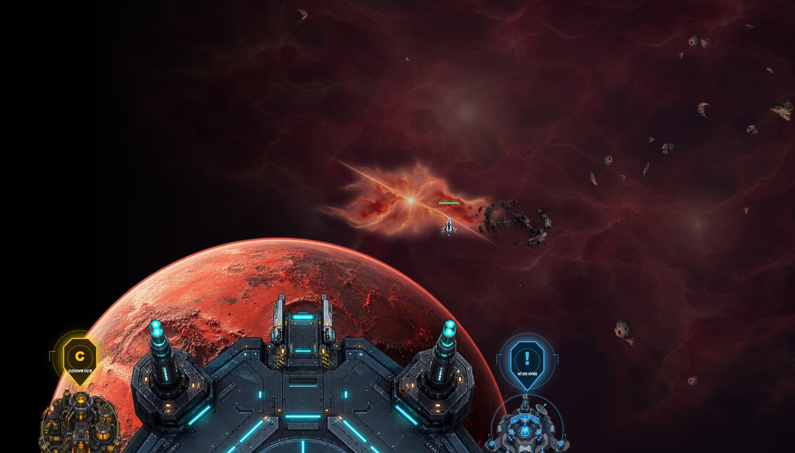
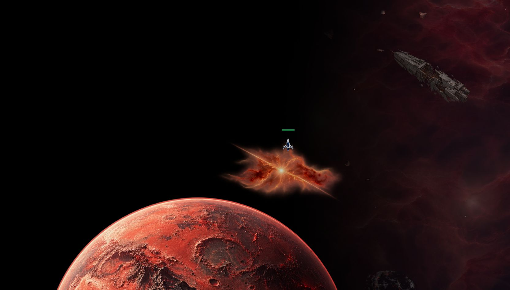

Hélion 1 · 22 octobre 2026
Lumière, décors et limites affinés
La lumière se décale vers la droite, les épaves et les rochers retrouvent leur matière et le fond nuageux laisse place au vide plus près des bords. L’explosion sombre est retirée.
Lumière et épave

Après — lumière décalée et objets solides plus lisibles.
Arrivée au bord gauche

Après — le vide apparaît près du bord, la planète continue au-delà.